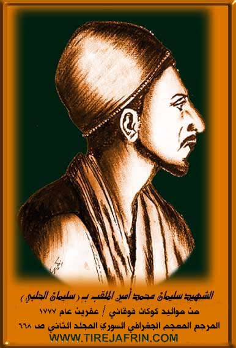

General Information
Nahiya (Subdistrict)
Mabeta
Also Known As
Jazroniyah Foqani, Kokan Foqani, Kokanê Jorin, Konkan, Kukanê, Kûkanê, الجزرونية, الجزرونية فوقاني, كوكان فوقاني, كوكانه جورن
Tribes
Heseniyan, Rûbariyan, Şêxiyan
Families, Clans, etc.
Avdê Horê, Berket, Cilha, Evdê Horê, Hecçenan, Mala Celha, Mam Şemka, Meşikan, Oskopar, Oskoper, Xelîce, Xelîlê Çandikê

Photos



Basic Information about Kokanê Jorin
Source: Ax û Welat (Information for Kokanê Jêrin and Kokanê Jorin)
Etymology: From the phrase Kûka Kaniyê, referring to the hollow of a spring or mountain
Foundation Date/Period: Kûkana Jor approx 700 years ago or 1733 CE; Kûkana Jêr approx 100 years ago
Number of Caves: 20
Springs: Kaniya Kûkanê, Kaniya Ereban, Kaniya Fatu, Zrafkê
Hills: Sirtê Bêrê, Sirtê Golê
Ruins: Xerabê Dêle
Trees: Dara Merxê
Other Landmarks: Geliyê Avgirê, Geliyê Qopera, Geliyê Gazmisrêv, Geliyê Çokreşin, Geliyê Şêxmandek, Geliyê Şikeftxulî, Zinarê Iniyê, Reçû
Source: Afrin 366 (Information for Kokanê Jorin and Kokanê Jêrin)
Etymology: "Kûkê leylekê" which refers to a specific bird or sound associated with the area
Foundation Date/Period: 1700 CE
Ruins: Kûkan a qedîm, kolkê mîxter
Trees: Kûkê leylekê
Other Landmarks: Mabatê
Summaries
I. Summary from TirejAfrin Site of Kokanê Jorin (English)
According to the book 'جبل الكرد (عفرين)' 'Mountain of the Kurds (Afrin City)' geographical study by Dr. Mohammed Abdo Ali (محمد عبدو علي):
Kokanê (كوكان), الجزرونية /2082n - 865ha/:
- Kok: means tree stump or root, and an is a marker indicating the plural state in Kurdish. They are two villages, the upper and lower:
1 - PhD/Villages/Kokanê Jorin (كوكان فوقاني), جزرونية فوقاني /8km - 440m/:
- It is the older village, and it is the birthplace of Suleiman al-Halabi (سليمان الحلبي) who assassinated General Kleber (الجنرال كليبر), Napoleon's (نابليون) successor in his campaign on Egypt in 1800. Its location is near the summit of the northern slope of a plateau, some parts of which are covered with oak trees.
According to the book: Afrin... Her River and Green Hills by writer Abdul Rahman Mohammed (عبدالرحمن محمد) from Qatmeh village (قرية قطمه):
Kokan Foqani (كوكان فوقاني): A village in Kurd Mountain (جبل الكرد), belonging to Mabetli District (ناحية المعبطلي), Afrin (منطقة عفرين), Aleppo Governorate (محافظة حلب).
It is a small village located in the central part of the mentioned mountain on the southern slope of Hawari Mountain (جبل هواري) on a mountain elevation and steep slope. Its soil is clay-based. It is 12km from Mabetli town (بلدة معبطلي) toward the northwest. To the north it is bordered by a high mountain elevation and Uksuzli village (قرية أوكسوزلي), to the south by a slope and al-Katkh al-Khasb plain (سهل الكتخ الخصب) and the /Afrin City _ Rajo/ road (عفرين _ راجو) and the railway line and Qitranli village (قرية قطرانلي) and Arab Oshaghi (عرب أوشاغي), to the west by a slope and al-Tirah valley (وادي الطيرة) and railway and Hamashlak village (قرية حمشلك) and Ba'danli (بعدنلي), and to the east by a slope and plain and Hayat village (قرية حياة). It contains approximately 25 houses (بيتاً) and is about 150 years old (عاماً). Its old residences are stone and clay with wooden roofs, and the modern cement ones spread east and south except for the northern side which is high mountainous. It has an electricity network and a water network connected to a well south of the mentioned village. The inhabitants work in rain-fed agriculture on 250ha (grains, olives, grapevines, almonds) and irrigated artesian wells with summer vegetables and fruit trees (walnuts, almonds, apricots, and cherries). The village is surrounded by trees from all directions and in front of it is the open plain on al-Katkh al-Khasb plain (سهل كتخ الخصب). Among its most important families is the Kilo family (عائلة كيلو) (they were the first to inhabit the village).
Also among the families present in the village: Al Hamo (آل حمو) / descendants of the hero Suleiman Us Qobar (سليمان اوس قوبار) = Suleiman al-Halabi (سليمان الحلبي) = / - Al Abdo Horo (آل عبدو هورو) - Al Jalha (آل جلحا)).
Among the social figures, village headman Mohammed Mustafa Hamo (محمد مصطفى حمو) - Abdo Youssef Hamo (عبدو يوسف حمو) - Mohammed Omar Murad (محمد عمر مراد).
Village headman: Mohammed Hamo Mustafa (محمد حمو مصطفى)
II. Summary from Ax û Walat Transcript of Kokanê Jorin
Source: https://www.youtube.com/watch?v=Uwpv8OPHzNA
The area known as Kûkanê in the Mabata district of Efrîn consists of two distinct settlements: Kûkana Jor (Upper) and Kûkana Jêr (Lower). The name is derived from Kûka Kaniyê, referring to the geographical "hollow" of a mountain spring that defined the original site. Kûkana Jor, situated on the hill Sirtê Bêrê, is the older of the two, with oral history suggesting it was founded approximately 700 years ago, though specific records mentioned by elders cite the year 1733. Kûkana Jêr is a younger settlement, established roughly 100 years ago near the historic ruins of Xerabê Dêle, a site featuring over 20 ancient cisterns and caves indicative of a much older town.
The social structure of the villages is defined by specific tribal and family lineages. Kûkana Jor is inhabited primarily by the Şêxiyan and Heseniyan tribes, housing families such as Oskoper, Evdê Horê, Cilha, Xelîce, and Hecçenan. Kûkana Jêr is historically linked to the Rûbariyan tribe. Its foundation is attributed to the Berket family, who migrated from the village of Bênê in the Şêrawa district due to social conflicts. Other families in the lower village include Meşikan and Mam Şemka, with the Cilha family having a presence in both settlements.
A significant historical figure from Kûkana Jor is Silêmanê Helebî (born Mihemed Emîn in 1777). He traveled to Misr (Egypt) to study at Ezher and is famous for assassinating the French General Kléber in 1801. Local history recounts that following this event, the French bombarded the village, forcing the residents of Kûkana Jor into exile for three years. While he is often claimed as an Arab hero in regional narratives, the villagers maintain a distinct memory of his Kurdish origins and the location of his family home.
The geography of Kûkanê is rich with water sources and natural landmarks that serve as community hubs. The most prominent is Kaniya Kûkanê, along with others like Kaniya Ereban and Kaniya Fatu. The area is fed by the waters of Zrafkê and Kitix, which historically supported lush gardens and poplar trees, though these have largely been replaced by olive and pomegranate groves. The landscape is defined by valleys such as Geliyê Avgirê, Geliyê Qopera, and Geliyê Şikeftxulî, and the rock formation Zinarê Iniyê. Culturally, the village preserves its heritage through individuals like Ziwêr, who maintains a collection of traditional agricultural tools like the Cercer (threshing tool) and stone Me'ser (molasses presses), and through local artists like Sizda Muhemed and Tîrana Abdo.
Summary from Afrin 366 Transcript of Kokanê Jorin
Source: https://www.youtube.com/watch?v=riSYuMjc8-Q
The village of Kûkanê is situated in the Mabatê district and is divided into two distinct sections known as Kûkanê jêr and Kûkanê jûr. Residents describe the location as having a deep history that spans several centuries. While the upper settlement was established approximately one hundred years ago, the original site known as Kûkan a qedîm is believed to be much older. Elders estimate the history of the location dates back five hundred years to the Ottoman era. A physical testament to this long history was discovered in the form of a stone inscription at the home of the Oskopar family. This artifact bore the date 1111 Hicrî and identified the owner of the house as Osman ibn Nebir. The name of the village itself is thought to derive from Kûkê leylekê which refers to a specific bird or sound associated with the area.
The social fabric of Kûkanê is composed of several key families who have lived there for generations. The primary lineages mentioned by the villagers include Oskopar, Avdê Horê, Xelîlê Çandikê, and Mala Celha. The village has faced agricultural challenges, particularly regarding the cultivation of zeytûn trees and water scarcity, but the community maintains a strong identity. This identity is bolstered by a reputation for producing talented singers and musicians. The village is home to several well known dengbêj including Ecîb Kerîm, Kamîran Mihemed, and Mihemedê Hisên, as well as the musician Newret.
The most significant historical narrative connected to Kûkanê involves the figure of Silêman El-Helebî. Born in the village into the Oskopar family, he was the son of a merchant named Mihemed Emîn who traded goods between Efrîn and Heleb. Silêman eventually traveled to Misr to study at Ezher. During the French occupation of Egypt, he became involved in the resistance and assassinated General Kléber in a garden in Cairo. Villagers recount that Silêman was subsequently executed by the French authorities at Tel el-Aqarib in the year 1800. His skull was taken to Fransa where it remains in a museum to this day. Due to this connection, some of the village lands were historically referred to as Milkê Helebî.
Foundation/Origin Information of Kokanê Jorin
It is the older of the two Kokanê villages. The Kilo family were the first to inhabit the village.
Source: TirejAfrin Site
Established on a hill called Sirtabêrê. Historically, the village was comprised of a single family that separated into several distinct clans during the 20th century.
Source: Ax û Walat Transcript
Possible Village Name Meaning of Kokanê Jorin
"Kok" means tree stump or root in Kurdish.
Source: TirejAfrin Site
The name "Kûkanê" is derived from the Kurdish phrase "koka kaniyê," meaning "the source of the spring."
Source: Ax û Walat Transcript